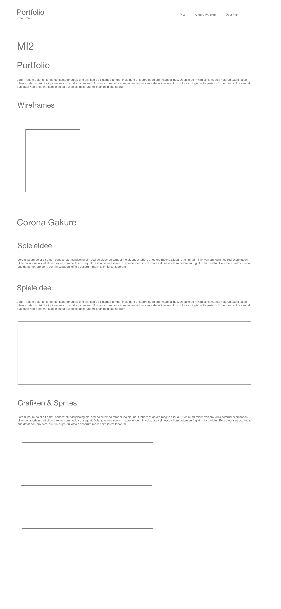
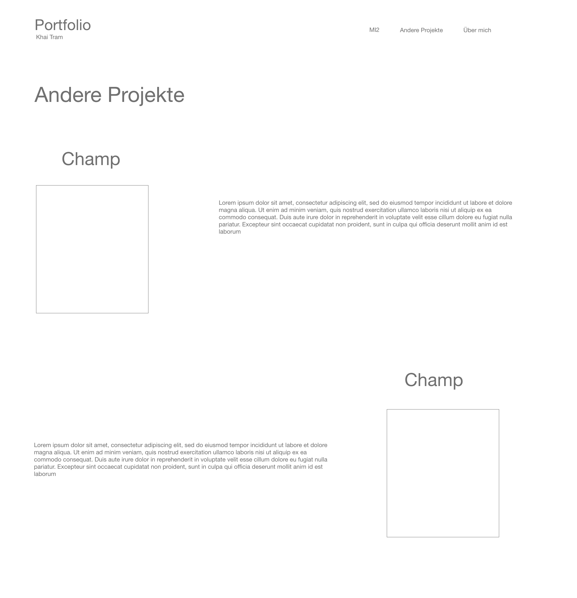
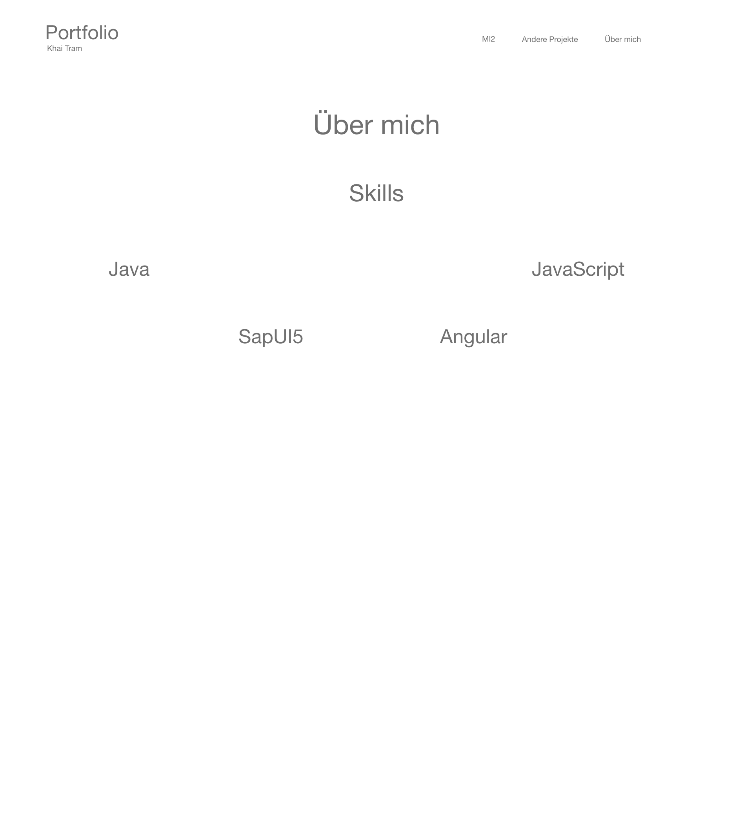

Portfolio Test
Dieses Portfolio wurde im Rahmen des Moduls "Medieninformatik 2" erstellt. Es handelt sich hierbei, um eine responsive Website, die Informationen über meine Arbeit in diesem Modul, Meine Projekte in anderen Modulen und meinen Skills enthält. Ziel war es dabei ein minimalistisches Design zu entwickeln und die genannten Informationen kurz und knapp zu vermitteln.
Als ersten Schritt habe ich zunächst einige Wireframes mit Adobe XD entwickelt. Im Laufe des Projekts sind mir weitere eingefallen die ich dann in der Realisierung hinzugefügt habe.
MI2
Andere Projekte
About
Für die Gestaltung dieser Seite habe ich neben HTML, CSS und JavaScrypt einige Frameworks benutzt. Diese sind:
Hierbei handelt es sich, um das Projekt, dass ich im Rahmen des Moduls MI2 entwickelt habe. Zur Entwicklung des Spiels wurde das Phaser 3 Framework benutzt.

Das Semester fing an als weltweit Maßnahmen ausgerufen wurden, um die Ausbreitung des Coronavirus zu verlangsamen und unser Gesundheitssystem zu schützen. Geschäfte schließen, Veranstaltungen wurden abgesagt, und der Alltag jedes einzelnen Menschen hat sich verändert. Die Situation nahm apokalyptische Züge an. In der gleichen Situation befindet sich unser Held der mit aller Macht versucht sein Dorf Corona Gakure vor dem Coronavirus zu befreien. Ausgerüstet mit einer Maske, Desinfektionsmittel und einem Impfstoff macht er sich auf den Weg sein Dorf zu retten und begibt sich zum Ort, wo die meisten Infizierte aufzufinden sind. Dem lokalen Krankenhaus. Sowohl der Name des Spiels als auch das Ninja Thema sind von der Animeserie Naruto inspiriert. Die Serie spielt im Dorf Konoha Gakure.
Die Aufgabe im Spiel ist es das Krankenhaus vor dem Coronavirus zu befreien. Damit sind sowohl der Virus selbst als auch Infizierte gemeint.
Zur Steuerung des Spiels werden neben den Pfeiltasten die Tasten Q, W und E benötigt.
Jede einzelne Grafik in diesem Spiel wurde selbst designt und gezeichnet. Hier sind einige Beispiele. Mehr gibt es in der Doku.